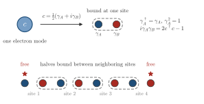

Advanced Quantum Materials 2027 · All lectures · Lecture notes
Session 5. Superconductivity, Nambu Representation and Majorana Physics
5.15 Majorana bound states and how to split an electron into two Majoranas
A Majorana fermion is defined algebraically by the condition that its field operator is equal to its own Hermitian conjugate,
\[\gamma^\dagger = \gamma, \tag{5.16}\]
which means that the creation and the annihilation of the quasiparticle are the same operation, so the particle is its own antiparticle. At first this seems to have no place in an ordinary material, since an ordinary electron is clearly not its own antiparticle (\(c^\dagger \ne c\)), and a semiconductor, for example, never hosts anything of this kind.
However, there is a purely algebraic fact that makes it possible. Any ordinary fermionic operator can be written as a combination of two Hermitian Majorana operators that anticommute with each other,
\[\gamma_A = c + c^\dagger, \qquad \gamma_B = -i\left(c - c^\dagger\right), \tag{5.17}\]
so that \(\gamma_A^\dagger = \gamma_A\), \(\gamma_B^\dagger = \gamma_B\), \(\{\gamma_A,\gamma_B\}=0\) and \(\gamma_A^2=\gamma_B^2=1\), where we used \(\{c,c^\dagger\}=1\). If we invert (5.17), we obtain
\[c = \frac{1}{2}\left(\gamma_A + i\gamma_B\right), \qquad c^\dagger = \frac{1}{2}\left(\gamma_A - i\gamma_B\right). \tag{5.18}\]
At first this is only a change of variables, a mathematical trick without new physics. Every electron is always made of two Majorana operators that are tightly bound together into an ordinary fermion, and normally there is no way to observe \(\gamma_A\) or \(\gamma_B\) separately, only their fixed combination \(c\). Superconductors are special because BdG eigenstates are already mixtures of electrons and holes by construction, since the Nambu spinor of section 5.8 explicitly combines \(c_{\mathbf k\sigma}\) with \(c_{-\mathbf k\sigma'}^\dagger\). So a superconductor is the kind of system where, with the right pairing symmetry and the right geometry, the two Majorana components of an electron can become spatially separated, or deconfined, instead of staying together at one site. This deconfinement is the topic of the rest of this section.

Which statement about the operators \(\gamma_A=c+c^\dagger\) and \(\gamma_B=-i(c-c^\dagger)\) of (5.17) is correct?
Show the answers
- A. ✓ True
This is true. Using \(\{c,c^\dagger\}=1\) we get \(\gamma_A^2=\gamma_B^2=1\) and \(\{\gamma_A,\gamma_B\}=0\) from (5.17). On the empty mode \(\gamma_A\gamma_B\) gives \(i\) and \(\gamma_B\gamma_A\) gives \(-i\).
- B. ✗ False
This is false. We have \(\gamma_A^2=c^2+c^{\dagger2}+cc^\dagger+c^\dagger c=0+0+1=1\). Applied twice on the empty mode, \(\gamma_A|0\rangle=|1\rangle\) and \(\gamma_A|1\rangle=|0\rangle\), which is not zero.
- C. ✗ False
This is false. On the empty mode we get \(\gamma_A\gamma_B|0\rangle=i|0\rangle\) and \(\gamma_B\gamma_A|0\rangle=-i|0\rangle\). They differ by a sign, so the two operators anticommute.
The electron mode is empty. What is the value of \(i\gamma_A\gamma_B\)?
Show the answers
- A. ✓ True
This is true. Inserting (5.17) gives \(i\gamma_A\gamma_B=2c^\dagger c-1\). The empty mode has \(c^\dagger c=0\), so the value is \(-1\).
- B. ✗ False
This is false. The value \(+1\) belongs to the filled mode, where \(c^\dagger c=1\) gives \(2-1=+1\). The empty mode has \(c^\dagger c=0\) and gives \(-1\).
- C. ✗ False
This is false. The operator \(i\gamma_A\gamma_B\) squares to one, since \(\gamma_A^2=\gamma_B^2=1\) and they anticommute. Its eigenvalues are therefore \(\pm1\), and zero is never found.
Try it. In the cell, the density of states is computed on the site 0, on L//10 and on L//2. The peak at zero energy is large on the end site, small at L//10 and negligible in the middle. It is the half of a split electron that sits at that end.